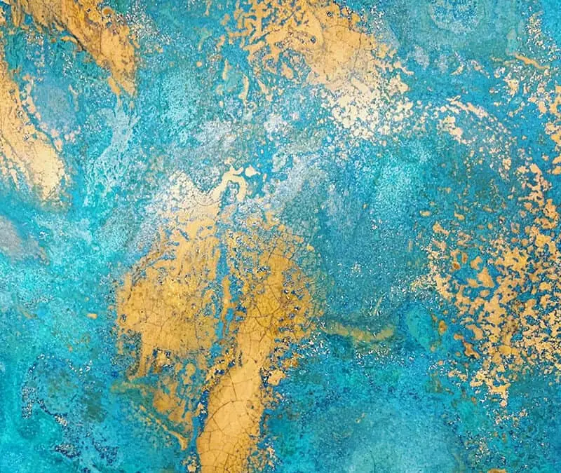
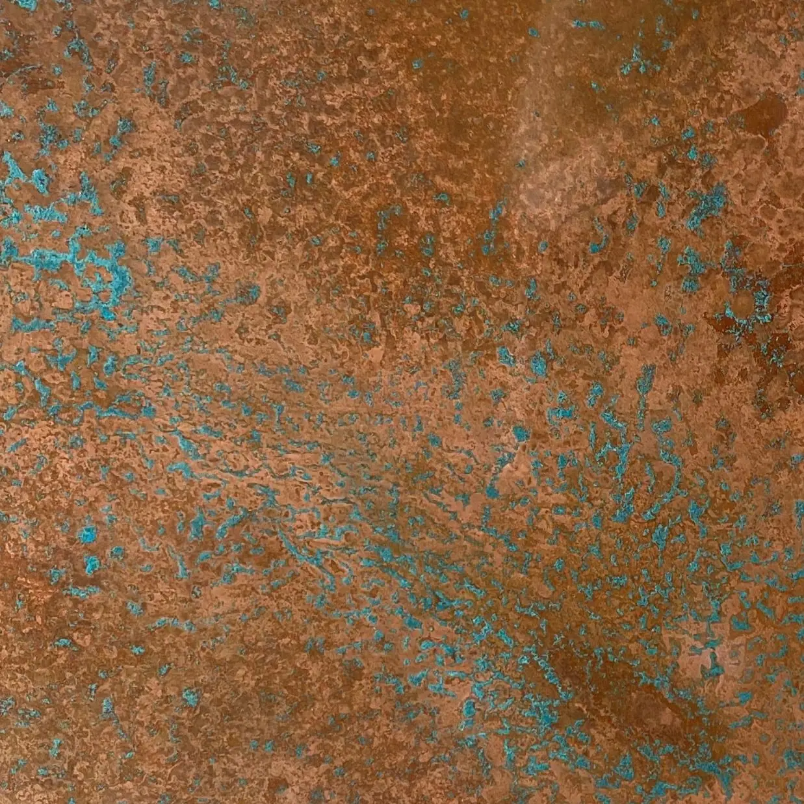
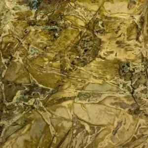

Verdigris (also known as ‘verdi gris’) is a term that frequently captures the attention of designers, architects, and homeowners alike. The stunning blue-green patina that forms on metals like copper, brass, and bronze is a highly sought-after feature in decorative and design applications. Whether used for splashbacks or worktops in domestic kitchens, feature walls in commercial interiors, or as statement pieces in bars and restaurants, the verdigris colour lends a unique aesthetic that exudes character and history.
What is Verdigris?
Verdigris, or verdi gris, is the natural patina that develops on copper , brass , and bronze when they are exposed to the elements over time. This distinctive layer is the result of a chemical reaction between the metal and environmental factors such as air, moisture, and pollutants. The resulting surface not only enhances the visual appeal but also provides a protective layer against further corrosion.
What Colour is Verdigris?
The verdigris colour is predominantly a striking blue-green, but it can vary depending on the metal composition and environmental exposure. On copper, verdigris can manifest as shades ranging from turquoise to deep green. Brass, which contains copper and zinc, may develop a slightly different patina with hints of gold, while bronze can display darker, earthier verdigris tones.
Famous Examples of Verdigris
Some of the most iconic examples of verdigris can be seen in architectural landmarks worldwide. The Statue of Liberty, with its unmistakable verdigris copper exterior, is one of the most famous instances of this natural patina. Historical buildings, such as domes and spires across Europe, also showcase verdigris, adding to their timeless charm and historical significance. Other notable examples include the verdigris-clad roof of the Berlin Cathedral, the intricate copper detailing on the Parliament Buildings in Ottawa, and the verdigris accents on the Château Frontenac in Quebec.
How to Achieve the Verdigris Colour on Copper or Brass
The verdigris colour of the patina naturally forms over time, often taking months to several decades, depending on environmental conditions such as humidity, pollution, and temperature variations. However, it is possible to accelerate this process to achieve the desired look more quickly.
At Halman Thompson, expert artisans use a unique oxidisation process to create verdigris finishes on copper and brass. Each sheet undergoes a carefully controlled treatment that results in a spectrum of patina tones, from turquoise greens to deep copper hues, tailored to suit individual preferences and project specifications. This process allows for the creation of unique verdigris finishes that can complement various design styles and requirements. Then, to preserve the achieved aesthetic and prevent further ageing, a gloss lacquer is typically applied to ensure a long-lasting, brilliant finish.
Verdigris Finishes
Verdigris finishes can be crafted by hand to achieve a wide variety of colours and patterns, ranging from bright mint to muted maroon tones. These finishes can include delicate marbling, subtle speckles, or dramatic sweeps of contrasting light and dark shades.

Aged Copper Verdigris
Aged copper can develop a rich and varied range of patinated effects, making it a versatile choice for interiors. For example, Halman Thompson offers verdigris copper in the Northumberland finish which creates deep, earthy tones of natural copper with swirls of jade and turquoise verdigris. The Ayrshire finish has delicate speckles of blue-green copper verdigris, while the Hertfordshire finish delivers a striking stained glass effect featuring crackles and splashes of vibrant verdigris. For a more understated yet elegant look, the Cheshire finish combines a rich array of autumnal tones from a palette of russet, cinnamon, and rose.

Aged Brass Verdigris
Aged brass offers a stunning array of verdigris aesthetics, blending warm gold tones with verdigris accents. For example, Halman Thompson’s Somerset finish boasts a wonderful blend of golden hues with patterns of swirls and shards of brass verdigris. For a more colourful appearance to achieve that distinct blueish green verdigris, it’s also possible to imbue brass sheets with hints of pink, blue, and green verdigris during the oxidisation process.
How to Maintain Your Verdigris Metal
Proper maintenance is crucial to preserving the beauty of verdigris metal finishes. If lacquer or wax is removed through cleaning, heat exposure, or abrasion, the finish will continue to develop naturally. Acidic substances such as vinegar, sauces, and fruit juices can accelerate this process, altering the appearance of the metal.
To maintain the desired look of your verdigris surfaces, it’s best to gently use warm soapy water and a soft microfibre cloth to remove dirt and debris. Harsh cleaning products that may strip the lacquer should be avoided. Always use mats when placing hot items on the surface, and clean up spills immediately to prevent staining or accelerated patina changes. If necessary, reapply the lacquer to preserve its appearance.
For detailed care instructions, visit our aged metal care guide .
Products


If you can dream it, we’ll make it.
Bars, balustrades, staircases, worktops, cladding and pieces that don’t have a name yet. Our designers and craftspeople work in brass, copper, zinc and steel, and alongside wood.